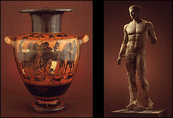

The Minneapolis Institute of Arts
Main Menu ~ Permanent Collection List ~ Interactive Museum Maps ~ Back ~ Next
Ancient and Egyptian Art
 (c) 39k
Highlights from the ancient art collection include an Egyptian model boat, painted Greek vases, and the Doryphoros, the finest Roman copy of a famous, lost Greek bronze sculpture.